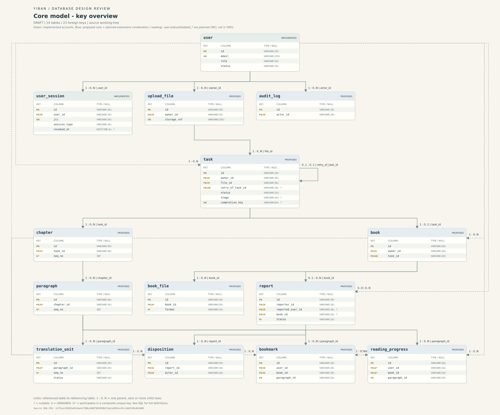

1. 产品范围
面向语言学习者的双语电子书生成系统：上传单语电子书 → 提取正文与章节 → 逐句/逐段翻译对齐 → 生成原文译文对照的双语电子书（EPUB/PDF 导出）；登录后的书籍、任务、下载与阅读记录归属到用户；管理员走独立入口只读运维。
- 首版：TXT 输入、英语→中文、单家真实翻译服务、后台任务与进度、双语预览、EPUB 生成与下载、个人书库、管理员最小只读查看。
- 后续：EPUB/PDF 输入、PDF 导出、六语互译、书签/继续阅读（FR-12/13）、完整管理端（举报审核/处置/留痕，FR-15）、PWA、OCR 评估。
2. 检查顺序（建议）
⑤ 进度
见本页 §6
账号已实现 / 整书业务待实现
见本页 §6
账号已实现 / 整书业务待实现
3. 数据库设计（14 表）
状态：✅ 已实现（对应 alembic 0001/0002） ✍ 本次拟定（首版核心） ⬜ 计划扩展（M2/M4 目标设计，非已实现）
| 表 | 说明 | 状态 |
|---|---|---|
user | 用户账号（含管理员角色与启停） | 已实现 + status 等计划扩展 |
user_session | 会话（JWT jti + 撤销） | 已实现 |
upload_file | 上传文件（私有、属主隔离） | 本次拟定（对齐 4e3c762，待评审） |
task | 任务 + 配置快照 + 进度计数 | 本次拟定 |
chapter / paragraph / translation_unit | 章节 / 段落 / 翻译单元 | 本次拟定 |
book / book_file | 书籍成果 + 文件记录 | 本次拟定 |
report / disposition / audit_log | 举报审核 + 处置记录 + 管理留痕（FR-15/G11） | 计划扩展 M2 |
bookmark / reading_progress | 书签 + 阅读位置（FR-12/13） | 计划扩展 M4 |
资源用量不单独建表，由聚合查询承载（待确认展示口径）。完整字段/约束/删除规则见 字段字典；页面↔数据见 页面数据对应表；设计 SQL 见 schema.sql。
4. ER 图
由 scripts/render_database_er.py（纯 Python 标准库，不连库/不启动浏览器）从 schema.sql 生成，已与 SQL 逐表逐列核对。
关键字段概览

查看全字段图（er.svg） · 可编辑源 01-er.mmd · 图文说明 01-er.md

5. 原型入口
多页静态站（非 SPA），任何静态服务器可托管；本地：cd prototype/v4 && python3 -m http.server 8080，打开 /index.html。
6. 真实实现进度
| 仓库 | 已实现（可运行） | 待实现 |
|---|---|---|
| yiban-api | 真实账号：注册/登录/me/退出、user/user_session（0001/0002）、JWT(cookie)+CSRF、role 服务端校验、MySQL 8.4 | 上传/解析/翻译/任务/EPUB 整书业务（上传方案评审中） |
| yiban-web | 已迁移首页、登录、注册、工作台（守卫+登录态） | 创建任务/任务详情/书库/阅读器页面迁移与接口接入 |
| yiban-admin | 管理员登录、会话恢复、守卫、退出 | 清理教学示例；任务/失败只读查看迁移 |
| 中央仓 | 需求、设计、完整 v4 原型、数据库设计检查版（14 表 + ER SVG） | 浏览器人工验收待完成 |
原型的登录/翻译/书库/下载均为本地模拟，不宣称为真实业务；真实账号实现见 yiban-api 源码与迁移。
7. 资料与源码下载入口
- 需求：需求分析与设计文档说明.md（Markdown 原文）
- 逻辑模型：数据库逻辑模型草案.md
- 设计 SQL：docs/database-design/schema.sql · 字段字典 02-字段字典.md · ER 源 01-er.mmd
- ER 图：er.svg · er-overview.svg
- 发布与回退：发布说明.md · 检查入口 课程检查入口.md
- 完整文件清单与校验见 发布说明 §发布白名单。